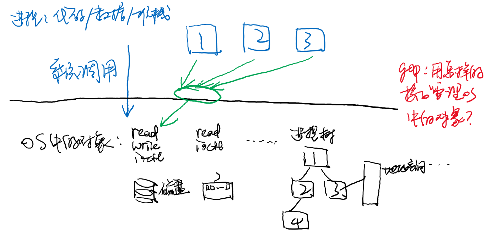
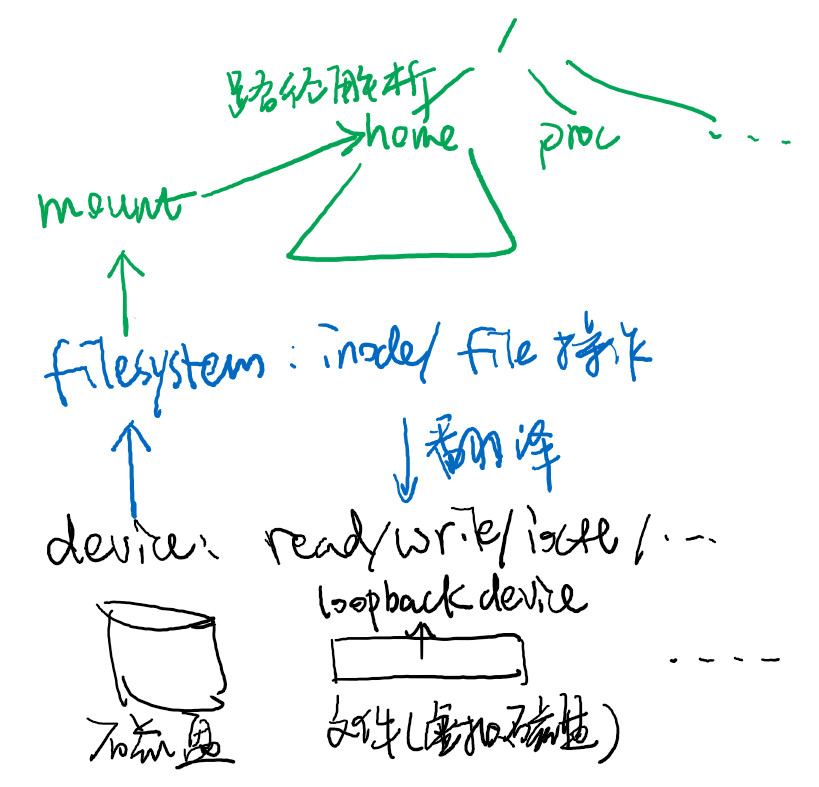

public: True class: center, middle # [C] 文件系统API 蒋炎岩 <jyy@nju.edu.cn> 南京大学计算机软件研究所 --- # 本讲概述 > 文件系统管理操作系统中能够抽象成“虚拟磁盘”接口访问的任何数据 > > * 目录/文件 > * 操作系统对象：devfs, procfs, sysfs, ... ---- * 文件系统管理 * 目录管理 * 文件管理 --- # 文件系统：回顾 文件系统：操作系统中的对象(any data)管理 * 目录/文件(inode) * 文件系统实现 * 把路径“路由”到相应的文件系统实现 * 实现read/write/getdents/mkdir/...操作的语义 .center[] --- class: center, middle # 文件系统管理 --- # “文件系统”都是哪里来的？ procfs, sysfs都不是系统启动自带的，而是“挂载”的 * 系统启动后仅有`/`, `/dev`，以及initramfs中的少量文件 * init程序负责挂载其他部分(例如`/home`) ---- ``` mount -t proc proc proc/ mount -t sysfs sys sys/ mount /dev/sda1 /home/ # try: mount -l ``` --- # 神奇的“挂载” 挂载机制创建了文件系统世界：连接设备 - 文件系统实现 - 目录树 * `mount -t type device dir` .center[] --- # 挂载 (cont'd) 系统中允许 * 有多个文件系统根“/”，互相不可见 * chroot; 容器 (namespaces) * 一份文件系统代码，多个设备/挂载点 * 允许系统内有多个ext4分区 * 挂载多个procfs/sysfs (容器) * 把一个文件(例如.iso)挂载到文件系统中 * 通过loopback device (类似于“虚拟光驱”) --- # Chroot and Jail chroot只影响路径解析 * 如果持有外部文件描述符，则很容易jail break ---- 轻量级操作系统容器(沙盒) * 如果“everything is a file”，所有可见的东西都在文件系统里，那么改变文件系统root就实现了完全的隔离 * root用户可以通过各种手段实现jail break * 无法限制非文件系统访问(socket) --- # Jail Break chroot()并不是容器的完全体 > This call does not change the current working directory, so that after the call '.' can be outside the tree rooted at '/'. In particular, the superuser can escape from a "chroot jail" by doing: > > `mkdir foo; chroot foo; cd ..`，或者C语言的[例子](/static/wiki/os/2019/demos/jail-break.c) * FreeBSD提供了`jail`，能实现用户和网络的隔离 * 现在Linux内核有完善的namespace，可以很容易的实现容器 --- class: center, middle # 目录管理 --- # Everything is a File .red[目录也是] * 目录也存储数据 (字节序列)，也是虚拟磁盘，因此目录和文件都用“inode”表示 (一个编号) * 操作系统在路径解析、目录遍历时对它的数据有特殊的解读 ---- 实现方法：目录上有一些额外的操作 * lookup (路径解析) * create (创建文件) * link (链接) * unlink (删除) * ... --- # 目录：并不是树 Linux系统允许创建两种类型的链接 * 硬链接：hard link * 软(符号)链接：soft/symbolic link ---- 一个命令理解硬链接和符号链接 ``` $ ln a.txt b.txt $ ln -s a.txt c.txt $ ls -il *.txt 2359514 -rw-rw-r-- 2 ... a.txt # 2 links 2359514 -rw-rw-r-- 2 ... b.txt 2359310 lrwxrwxrwx 1 ... c.txt -> a.txt ``` --- # 硬链接 硬链接的目标 * 只能是文件(不能是目录) * 不能跨越文件系统 * 硬链接总是合法可以访问——能看到硬链接，说明文件系统被挂载 ``` ln: failed to create hard link '...' => '...': Invalid cross-device link ``` --- # 符号链接 符号链接可以是.red[任何]相对/绝对路径 * 只是一个“路径解析提示” * 非常有用 & 容易滥用：(课程wiki) ```bash mkdir a b ln -s ../b a/b ln -s ../a b/a # Got: /some-dir/a/b/a/b/a/b/a/b/a/b/a/b/a/b/a... ``` ---- ```bash mkdir a b ln -s ../b/a a/b ln -s ../a/b b/a # ???? ``` --- class: center, middle # 文件管理：打开文件 --- # Everything is a File 我们熟知的一系列API，访问各种文件： * open(); read/write(); close(); ---- 用这套API： * 访问磁盘上的数据 * 读取系统信息 (procfs) * 配置操作系统 (sysfs) * ... --- # open() 我们可以在Vim里打开一个目录 * 能否使用open系统调用打开目录？ ---- ```c int main() { int fd = open(".", O_RDONLY); // O_RDWR -> EISDIR if (fd < 0) { perror("open error"); // success? } else { int nread = read(fd, buf, sizeof(buf)); if (nread < 0) { perror("read error"); // success? } } return 0; } ``` --- # open() 为什么我们需要能.red[打开一个目录]？ * 可以打开，但无法read/write/... ---- `O_DIRECTORY`: If pathname is not a directory, cause the open to fail. This flag was added in kernel version 2.1.126, to avoid denial-of-service problems if opendir(3) is called on a FIFO or tape device. ``` if (is_dir(path)) { // 某人把path*替换*成了FIFO open(path, O_RDONLY); } ``` --- # 打开目录 打开目录得到了一个.blue[指向文件系统某个位置的指针] ---- 对目录本身的操作 * fchmod, fchown, ... 相对于目录位置的操作 * openat() * linkat() ---- 更多的好处 * 避免了每次open都解析路径 (有时路径很长) * 在fd在合法的前提下，目录总是存在 * …… --- class: center, middle # 文件操作：文件描述符 --- # 文件描述符 一个打开的文件 > The return value of `open`() is a file descriptor, a small, nonnegative > integer that is used in subsequent system calls (`read`(2), `write`(2), > `lseek`(2), `fcntl`(2), etc.) to .red[refer to the open file]. ------ - 对同一个文件的多次操作是自然的 - 文件描述符避免了每次操作都要重新打开文件 - 同时也帮助我们自动管理文件访问的偏移量 ------ ```c ssize_t read(const char *fname, void *buf, size_t length, off_t offset, int whence); ``` --- # 通过文件描述符访问文件 概念：文件 = 虚拟磁盘 = `uint8_t file[]` ------ 内存映射方式访问 - 适合随机访问的结构数据 (数据库) ```c fd = open("/dev/sda", O_RDONLY); uint8_t *file = mmap(NULL, 128 GB, PROT_READ | PROT_WRITE, MAP_SHARED, fd, 0); ``` ------ read/write方式访问 - 适合流式文件 (文件描述符.red[托管了offset]) ```c int fd = open("fname", O_WRONLY); write(fd, "Hello ", 6); write(fd, "World\n", 6); ``` ------ # 文件描述符 (cont'd) fork()会使子进程.red[继承]文件描述符 - 父子进程的offset分别如何管理？ ------ 考虑各种系统中可能的情况 - (日志) `O_WRONLY`打开；同时写入日志文件 → .red[共享offset] - (追加写入) `O_APPEND` (`man 2 open`，有有趣的事情) → .red[不需要offset] (offset总是等于size) - 数据库：父子进程同时位于同一个offset；分别相对寻址 → .red[分离offset] ------ 思考题：.green[`dup()`是否实现分离offset]？ ------ # 分离offset 除了再打开一次文件，有别的办法吗？ ```c ssize_t pread(int fd, void *buf, size_t count, off_t offset); ssize_t pwrite(int fd, const void *buf, size_t count, off_t offset); ``` ------ ```c // what to expect? int fd = open("/proc/self/fd/1", O_WRONLY); write(1, "Hello\n" ,6); write(fd, "Hello\n", 6); ``` --- # 持久数据的一致性 mmap有个很大的问题 * map完后可以任意读写 (例如mmap整个256GB的`/dev/sda`) * 但数据.red[不是立即写入磁盘] (为什么？) > Without use of `msync`, there is no guarantee that changes are written back before `munmap`(2) is called. —— (man 2 msync) ---- write是写入磁盘后才返回的吗？ --- # 保存文件：你不知道的真相 你以为你做了的操作，但是它没有(写入磁盘) ```c fd = open("your_file.cpp", O_WRONLY | O_TRUNC); // at this time, ... ``` ---- 你以为你没做的操作，但是它却做了(写入了磁盘) ```c tmp_path = save_tmp(); // open; write; close unlink(path); rename(tmp_path, path); ``` > Y. Jiang, et al. Crash consistency validation made easy. In *Proc. of FSE*, 2016. --- # 文件系统的同步 你可以试着执行`sync`命令，如果之前进行过很多磁盘操作，会等一段时间才返回 * 操作系统为了性能，做了非常激进的.red[缓存] * 看似简单的write()会触发多处更新：文件的metadata、文件系统的统计信息、文件的数据…… ---- * `fsync(fd)` - 等待所有数据到达磁盘 * `fdatasync(fd)` - 等待数据(write)到达磁盘 * `msync(addr, length, flags)` - `MS_ASYNC`: 开始写入，但调用返回；`MS_SYNC`: 等待写入完成